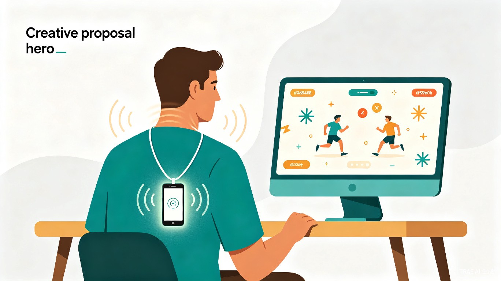

创意名称与介绍
想解决什么问题
当代打工人和学生党长期伏案，导致颈椎僵硬成为普遍的亚健康问题。然而，常规的颈椎操极其枯燥，极难坚持；市面上的颈椎按摩仪多为"被动放松"，无法解决缺乏主动活动的核心问题。用户迫切需要一种低门槛、强趣味、能随时随地进行的颈椎主动锻炼方案。
为什么会想到做这个
每次写代码或打游戏久了脖子酸痛，但又懒得停下来专门做操。我突然想到——大家手里都有一部内置高精度陀螺仪的智能手机，如果能用一根挂绳把它挂在胸前，跨屏变成 PC 端的小游戏手柄，就能在"摸鱼"打游戏的同时，不知不觉把颈椎给练了。
大概是什么产品
一个基于 WebSocket 跨屏通信的轻量化 Web 系统——手机端读取姿态数据，AI 算法进行安全校准，PC 端呈现体感小游戏交互。用户只需一部手机和一个浏览器，即可完成整套体验。
目标用户及痛点
面向哪些用户
长期面对电脑的程序员、办公白领、学生党，以及渴望缓解颈椎不适但缺乏运动毅力的亚健康人群。
在什么场景下使用
工作或学习间隙的碎片化休息时间（如 5-10 分钟的工位"摸鱼"），或是居家轻度放松、等待代码编译时的间隙。
当前痛点
设备门槛高
专门购买头戴式体感设备（如 VR）成本极高，且在办公室佩戴极其社死。
缺乏正反馈
传统的"米字操"毫无乐趣，缺乏即时互动反馈，用户很容易半途而废。
运动盲区
盲目转动脖子容易用力过猛导致拉伤，缺乏智能的安全幅度监测。
价值与意义
实用性与落地价值
本项目主打"零硬件采购成本"，仅需一部手机和一个浏览器即可实现跨屏硬件交互。开发周期短、技术可行性极高（HTML5 陀螺仪 API + WebSocket），能以最轻量的形态快速投入实际使用。
AI 创新与健康价值
引入 AI 算法对用户的连续陀螺仪数据进行时序分析，建立个人的"颈部健康活动基线"。AI 能够动态识别用户当前的颈椎灵活性，自适应调节 PC 端游戏的通关难度和移动幅度。
- 智能难度调节 — 检测到今天脖子僵硬，游戏内目标就会刷得近一些，降低动作幅度要求
- 游戏化锻炼 — 将枯燥的颈椎操转化为有趣的体感游戏体验，让用户在娱乐中完成主动锻炼
- 安全防护 — 实时监测运动幅度，有效防止动作过猛造成的二次物理伤害
- 个性化基线 — 持续追踪用户的颈椎活动数据，建立长期健康画像，提供科学的锻炼建议
核心理念：不是让用户"去锻炼"，而是让锻炼"自然发生"。当你在游戏中追逐目标、躲避障碍时，颈椎已经在不知不觉中完成了全套主动活动。